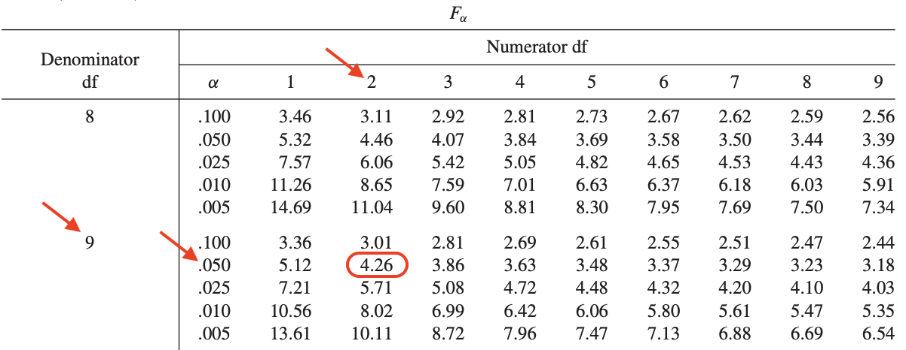

An ANOVA is a statistical test used to compare a quantitative variable between groups, to determine if there is a statistically significant difference between several population means. In practice, it is usually used to compare three or more groups. However, in theory, it can also be done with only two groups.1
In a previous post, we showed how to perform a one-way ANOVA in R. In this post, we illustrate how to conduct a one-way ANOVA by hand, via what is usually called an “ANOVA table”.
To illustrate the method, suppose we take a sample of 12 students, divided equally into three classes (A, B and C) and we observe their age. Here is the sample:
We are interested in comparing the population means between classes.
Remember that the null hypothesis of the ANOVA is that all means are equal (i.e., age is not significantly different between classes), whereas the alternative hypothesis is that at least one mean is different from the other two (i.e., age is significantly different in at least one class compared to the other two). Formally, we have:
As mentioned above, we are going to do an ANOVA table to conclude the test.
Note that the ANOVA requires some assumptions (i.e., independence, equality of variances and normality). The aim of this post is to illustrate how to do an ANOVA by hand and not how to verify these assumptions, so we suppose they are met without any verification. See how to test these assumptions in R if you are interested.
We first need to compute the mean age by class (referred as the group means):
and the mean age for the whole sample (referred as the overall mean):
\[\begin{equation} \begin{split} & \frac{24 + 31 + 26 + 23 + 24 + 21 + 19 }{12} \\ &\frac{+ 24 + 15 + 21 + 18 + 18}{12} = 22 \end{split} \end{equation} \]
We then need to compute the sum of squares regression (SSR), and the sum of squares error (SSE).
The SSR is computed by taking the square of the difference between the mean group and the overall mean, multiplied by the number of observations in the group:
and then taking the sum of all cells:
\[64+0+64 = 128 = SSR\]
The SSE is computed by taking the square of the difference between each observation and its group mean:
and then taking the sum of all cells:
\[\begin{equation} \begin{split} & 4+25+0+9+4+1+9+4 \\ & +9+9+0+0 = 74 = SSE \end{split} \end{equation} \]
For those interested in computing the sum of square total (SST), it is simply the sum of SSR and SSE, that is,
\[\begin{equation} \begin{split} SST &= SSR + SSE\\ &= 128 + 74 \\ & =202 \end{split} \end{equation} \]
The ANOVA table looks as follows (we leave it empty and we are going to fill it in step by step):
We start to build the ANOVA table by plugging the SSR and SSE values found above into the table (in the “Sum.of.Sq.” column):
The “Df” column corresponds to the degrees of freedom, and is computed as follows:
With this information, the ANOVA table becomes:
The “Mean.Sq.” column corresponds to the Mean Square, and is equal to the sum of square divided by the degrees of freedom, so the “Sum.of.Sq.” column divided by the “Df” column:
Finally, the F-value corresponds to the ratio between the two mean squares, so \(\frac{64}{8.222} = 7.78\):
This F-value gives the test statistic (also referred as \(F_{obs}\)), which needs to be compared with the critical value found in the Fisher table to conclude the test.
We find the critical value in the Fisher table based on the degrees of freedom (those used in the ANOVA table) and based on the significance level. Suppose we take a significance level \(\alpha = 0.05\), the critical value can be found in the Fisher table as follows:

So we have
\[F_{2; 9; 0.05} = 4.26\]
If you are interested to find this value with R, it can be found with the qf() function, where 0.95 corresponds to \(1 - \alpha\):
qf(0.95, 2, 9)## [1] 4.256495The rejection rule says that, if:
In our case,
\[F_{obs} = 7.78 > F_{2; 9; 0.05} = 4.26\]
\(\Rightarrow\) We reject the null hypothesis that all means are equal. In other words, it means that at least one class is different than the other two in terms of age.2
To verify our results, here is the ANOVA table using R:
## Df Sum Sq Mean Sq F value Pr(>F)
## class 2 128 64.00 7.784 0.0109 *
## Residuals 9 74 8.22
## ---
## Signif. codes: 0 '***' 0.001 '**' 0.01 '*' 0.05 '.' 0.1 ' ' 1We found the same results by hand, but note that in R, the \(p\)-value is computed instead of comparing the \(F_{obs}\) with the critical value. The \(p\)-value can easily be found in R based on the \(F_{obs}\) and the degrees of freedom:
pf(7.78, 2, 9,
lower.tail = FALSE
)## [1] 0.010916Thanks for reading.
I hope this article helped you to conduct a one-way ANOVA by hand. See this tutorial if you want to learn how to do it in R.
As always, if you have a question or a suggestion related to the topic covered in this article, please add it as a comment so other readers can benefit from the discussion.
In that case, a Student’s t-test is usually preferred over an ANOVA, although both tests will lead to the exact same conclusions.↩︎
Remember that an ANOVA cannot tell you which group is different than the other in terms of the quantitative dependent variable, nor whether they are all different or if only one is different. To answer this question, post-hoc tests are required. This is beyond the scope of the present post, but it can easily be done in R (see this tutorial).↩︎